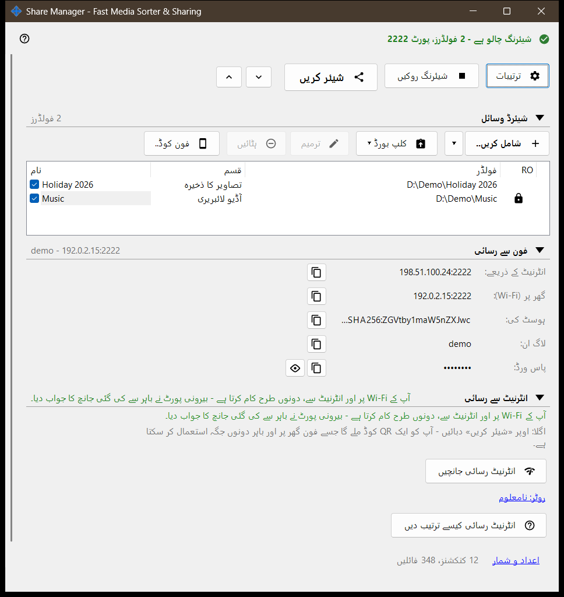
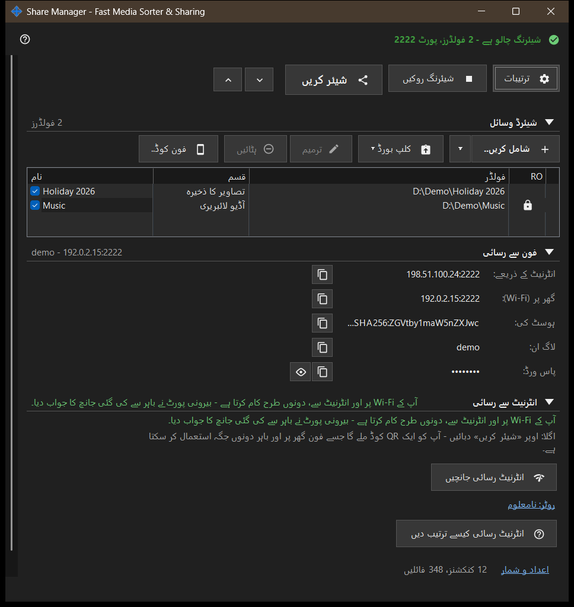

Share Manager - Fast Media Sorter & Sharing
یہ کس مقصد کے لیے ہے
Share Manager کی مرکزی ونڈو، جو مقامی شیئرنگ اور شیڈولنگ سروس ہے۔ یہ ان فولڈرز کی فہرست دکھاتی ہے جنہیں یہ پی سی SFTP کے ذریعے فون کے ساتھ شیئر کرتا ہے، شیئرنگ شروع اور بند کرتی ہے، رسائی کوڈ دیتی ہے اور بتاتی ہے کہ فون پی سی تک کیسے پہنچ سکتا ہے۔ شیڈول شدہ آپریشنز اور ایکسچینج اکاؤنٹ کے صفحات مینیجر کی ترتیبات میں ہیں۔ یہ ویوور سے یا ٹرے آئیکن سے کھلتی ہے؛ ونڈو بند کرنے پر ایپ ٹرے میں رہتی ہے۔


اس ترتیب میں
- شامل کریں.. دبائیں اور فہرست میں فولڈر رکھنے کے لیے فولڈر.. چنیں۔
- فولڈر پر نشان لگائیں: نشان والے فولڈر ہی پیش کیے جاتے ہیں۔
- شیئرنگ شروع کریں دبائیں (اس کے لیے کم از کم ایک نشان والا فولڈر چاہیے)۔
- فون کے لیے QR کوڈ یا .fmscfg فائل لینے کو شیئر کریں دبائیں۔
- گھر کے نیٹ ورک کے باہر سے رسائی کے لیے انٹرنیٹ سے رسائی گروپ کھولیں اور اس کے دو بٹن استعمال کریں۔
- کام ختم ہو تو شیئرنگ روکیں دبائیں۔
عناصر
اوپری قطار
ترتیبات مینیجر کی ترتیبات کھولتا ہے۔ سرور چلنے کے دوران شیئرنگ شروع کریں بٹن شیئرنگ روکیں بن جاتا ہے۔ شیئر کریں رسائی کوڈ کا وزرڈ کھولتا ہے اور صرف تب کام کرتا ہے جب شیئرنگ چل رہی ہو؛ ورنہ اشارہ کہتا ہے کہ پہلے سرور شروع کریں۔ سب کھولیں اور سب سمیٹیں نیچے کے گروپس کو کھولتے یا بند کرتے ہیں۔
شیئر کیے گئے وسائل
ہر وسیلے کی ایک قطار، چیک باکس اور نام، قسم اور فولڈر کے کالم۔ نشان والی قطار فونز کو پیش کی جاتی ہے؛ خالی فہرست میں پہلا وسیلہ شامل کریں.. دکھائی دیتا ہے۔ آخری نشان والے فولڈر کا نشان ہٹانے پر ونڈو پوچھتی ہے کہ شیئرنگ روکنی ہے یا نہیں، کیونکہ جڑے ہوئے فون منقطع ہو جائیں گے۔ کوئی نشان لگائے بغیر شیئرنگ شروع کرنے پر صرف یہ اشارہ آتا ہے: پہلے ایک فولڈر شامل کریں اور اس پر نشان لگائیں۔
فون سے رسائی
کنکشن کا وہ ڈیٹا جو فون یا کسی بھی SFTP کلائنٹ کو چاہیے: انٹرنیٹ پر اور گھر میں (Wi-Fi) پتہ، IPv6، ہوسٹ کی، لاگ ان اور پاس ورڈ۔ پاس ورڈ دکھائیں اسے ظاہر کرتا ہے اور پاس ورڈ چھپائیں اسے دوبارہ ڈھانپ دیتا ہے۔ گروپ کے نیچے کا متن بتاتا ہے کہ فون پی سی تک صرف گھر میں پہنچتا ہے یا باہر سے بھی۔
انٹرنیٹ سے رسائی
انٹرنیٹ رسائی جانچیں انٹرنیٹ رسائی کی جانچ کی ونڈو کھولتا ہے۔ انٹرنیٹ رسائی کیسے ترتیب دیں روٹر کی رہنما کھولتا ہے۔ روٹر: .. لنک روٹر کا اپنا صفحہ کھولتا ہے؛ کوئی روٹر نہ ملنے پر یہ روٹر: نامعلوم دکھاتا ہے۔ گروپ میں ایک انتباہ ہے: پتہ، لاگ ان اور پاس ورڈ جاننے والا کوئی بھی ہر شیئر کیے گئے فولڈر تک پہنچ سکتا ہے، اس لیے QR کوڈ یا .fmscfg فائل شائع نہ کریں اور کام ختم ہونے پر شیئرنگ بند کر دیں۔
اعداد و شمار
گروپس کے نیچے اعداد و شمار لنک ایک مختصر خلاصے کے ساتھ ہوتا ہے، جیسے N کنکشنز، M فائلیں۔ لنک مکمل کاؤنٹرز کے ساتھ شیئرنگ کی حالت کی ونڈو کھولتا ہے۔
جب سرور خصوصیات بند ہوں
جب تک سرور جزو فعال نہ ہو، ونڈو سرور خصوصیات بند ہیں اور سرور خصوصیات فعال کریں.. بٹن دکھاتی ہے، جو فولڈر شیئرنگ فعال کریں ونڈو کھولتا ہے۔ اگر شیئرنگ جزو انسٹالیشن میں موجود نہ ہو تو ونڈو یہ بتاتی ہے اور ایپ دوبارہ انسٹال کرنے کو کہتی ہے۔
مینیجر کی ترتیبات · SFTP اشتراک کی ترتیبات · ایکسچینج سرور کی ترتیبات